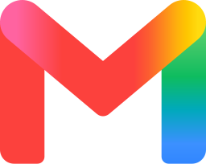
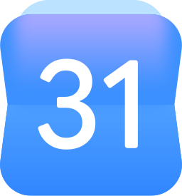
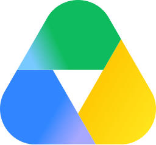
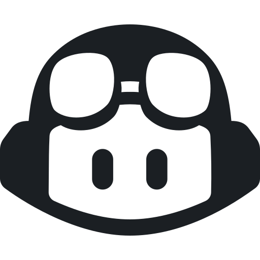
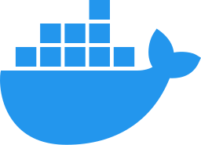

Cockpit plugins
Plug your tools
into any AI agent.
Open source MCP servers built by the Cockpit team. They speak the Model Context Protocol, the open standard supported by Claude, Codex, Cursor, Gemini CLI and many more. They run on your own computer and never route your data through our servers.
Plugins



Google Multi-Account
Connect every Gmail, Google Calendar and Google Drive account you own to your AI agent at once. Search all inboxes, merge all agendas, pick the right sender every time.
See the pluginMore plugins soon
Each plugin follows the same rules: local first, your own credentials, readable code.
Works with your agent
One plugin, every compatible client. Install it once and use it from the agent you prefer, or from several at the same time.


Plugins run locally over stdio, which every client above supports. Prefer containers? Each plugin also ships as a multi-architecture Docker image that any of these agents can launch, with nothing else to install.
How we build them
Local first
Plugins run as a process on your machine. Your emails, events and files go from the provider to your computer, then to the agent you chose, and nowhere else.
Your credentials
You create your own OAuth client. Tokens stay in your home folder, readable only by you, and can be revoked at any time.
Readable code
Small, focused codebases under the MIT license. Read every line before you give it access to your accounts.